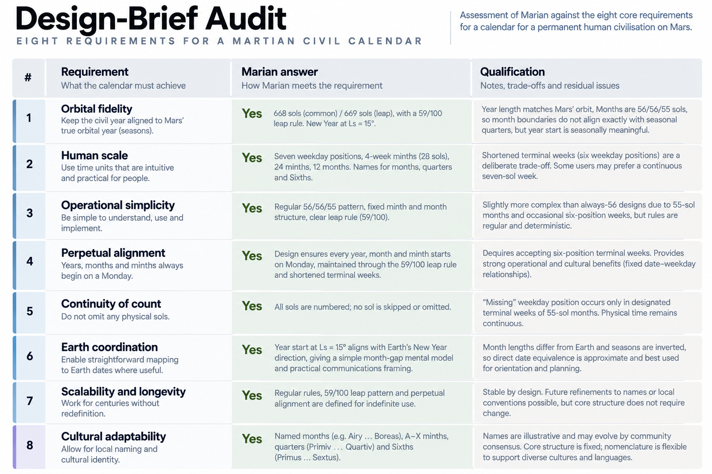
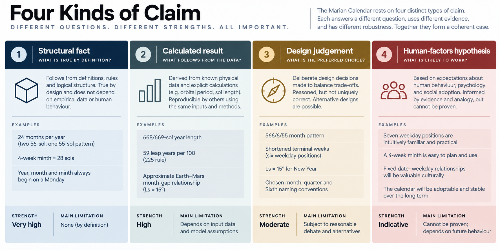

FIT
20) Does Marian Do What It Says?
Marian Against the Design Brief
A design brief is useful partly because it prevents one of the easier tricks available to a designer: changing the question after seeing the answer.
Chapter 4 set out what Marian was intended to achieve before the full architecture was introduced. Those requirements were not presented as universal truths about what every future Martian society must want. They described a particular scenario: an early permanent civilisation on Mars, still closely connected to Earth, needing a genuinely local civil calendar capable of supporting recurrent human activity across a 668- or 669-sol year.
We can now return to those requirements with the completed architecture in front of us.
The question is not whether Marian is elegant, whether another calendar could make different choices or whether future Martians would ultimately adopt it. The narrower test is:
Does Marian actually deliver the properties it was designed to deliver?
That is the purpose of this chapter.
The eight requirements
The audit can be summarised before examining the important qualifications.
| Requirement | What Marian provides | Qualification |
|---|---|---|
| 1. Astronomical anchoring | Ls = 15° annual reference; 668/669-sol civil years; 59/100 intercalation | Excellent founding-era approximation, not eternal exactness |
| 2. Structural regularity | 56–56–55 repeated four times; only 55/56-sol months; equal 167-sol common-year quarters; two annual templates | Variation remains, but is small and deterministic |
| 3. Recurring-date stability | Every valid recurring Month–Week–Day position retains the same weekday identity | Achieved through shortened terminal civil weeks |
| 4. Multiple human timescales | Standard intervals around 7, 28, 56, 111 and 167 sols | The intervals exist; their eventual usefulness remains empirical |
| 5. Annual legibility | 12 months, 4 quarters, 6 Sixths and 24 minths create several visible annual scales | More structure also means more concepts to learn |
| 6. Deterministic arithmetic | Integer rules for leap years, month lengths, date validity and conversion | Absolute historical conversion awaits the real MY1 epoch |
| 7. Earth–Mars legibility | Deterministic conversion plus the Ls = 15° twelve-month relationship and month-gap heuristic | The heuristic is coarse, not operational ephemeris data |
| 8. Durable structural identity | Canonical numeric identities independent of optional human names | The proposed vocabulary remains replaceable and untested |
This is not a scorecard. Several requirements concern properties that cannot all be maximised simultaneously, and others extend beyond what mathematics alone can establish.
The useful distinction is between what the architecture demonstrably provides and what remains a claim about human use.
1. Astronomical anchoring
The first requirement was that the Martian civil year should belong physically to Mars rather than being an arbitrary transplantation of Earth's chronology.
Marian does this through the Ls = 15° annual reference. The civil calendar approximates the corresponding Martian tropical recurrence using 668-sol common years and 669-sol leap years, with the 59/100 rule producing a mean civil year of:

Detailed figure description
An eight-row design-brief matrix compares Marian against its eight stated requirements. Columns distinguish the requirement, the response, and the qualification or cost. It covers Martian anchoring, regular structure, recurring dates, multiple timescales, annual legibility, deterministic calculations, Earth–Mars legibility and durable structural identity. The matrix is a qualitative design audit, not an externally certified score.
Editorial note: this is a descriptive summary, not an independently verified transcription of every diagram label. Refer to the surrounding text and the Marian technical specification for authoritative numeric details where applicable.
668.590000 sols
Around the intended founding era, that is extremely close to the recurrence the calendar is trying to track. Marian therefore has both a defined physical target and a deterministic mechanism for remaining close to it.
The requirement is satisfied.
That does not mean the current intercalation rule is claimed to be mathematically exact for every future century. Mars's orbital and seasonal relationships evolve over long timescales. The relevant point for this audit is narrower: Marian provides a reproducible Martian annual reference and an ordinary civil mechanism capable of tracking it without annual astronomical intervention.
2. Structural regularity
Structural regularity is easier to inspect.
A common Marian year contains twelve months in the pattern:
56 – 56 – 55 | 56 – 56 – 55 | 56 – 56 – 55 | 56 – 56 – 55
Only two month lengths exist. Months 3, 6, 9 and 12 take the shorter form, so each common-year quarter contains:
56 + 56 + 55 = 167 sols
A leap year changes only the final possible civil position of Month 12.
Marian therefore does not achieve regularity by making everything identical. It makes the variation small, repeated and predictable.
That is exactly what the brief asked for.
The architecture contains irregularity because Mars does. The important result is that users and software do not have to discover where that irregularity has gone each year.
3. Recurring-date stability
The third requirement was that recurring valid dates should retain stable weekly relationships where practical.
Marian delivers that directly.
Every month begins at Day 1. Every valid Month–Week–Day position therefore retains the same weekday identity whenever it occurs. A recurring Frisol remains Frisol; an annual institutional template does not need its date–weekday relationships rebuilt each year.
This property is achieved through the shortened terminal civil weeks already described. At the end of a 55-sol month, Week 8 ends after Day 6 and the following physical sol begins the next month at Day 1.
For the purposes of this audit, the important conclusion is simply that the requirement is real rather than aspirational:
Marian provides invariant recurring date–weekday relationships.
The design cost of choosing that property belongs to the wider comparison and trade-off analysis. Here, the question is whether the architecture does what the brief asked.
It does.
4. Multiple human timescales
The fourth requirement asked for useful civil structure at more than one scale.
Marian provides principal recurring horizons of approximately:
7 sols — week
27–28 sols — minth
55–56 sols — month
111–112 sols — Sixth
167 sols — common-year quarter
These are not merely arbitrary intervals laid on top of one another. Each arises from the same annual architecture, and each can be addressed consistently across institutions and software.
The structural requirement is therefore satisfied.
The stronger proposition — that these particular scales will prove useful to human beings — cannot yet be demonstrated. A minth may become intuitive. Sixths may become valuable institutional periods or remain relatively obscure. Those are human-factors questions.
The distinction is important:
Marian demonstrably provides multiple standard civil scales. Whether people make substantial use of all of them remains empirical.
5. Annual legibility
The fifth requirement was that a 668-sol year should remain mentally navigable rather than becoming one enormous undifferentiated span.

Detailed figure description
A four-column framework separates structural facts, calculated numerical results, design judgments, and hypotheses about future human preferences. Each column has a distinct color, short examples, and an explanation of how that class of statement should be evaluated. The main lesson is that a proven calculation does not prove an untested social preference or establish institutional adoption.
Editorial note: this is a descriptive summary, not an independently verified transcription of every diagram label. Refer to the surrounding text and the Marian technical specification for authoritative numeric details where applicable.
Marian approaches that through several overlapping maps of the same year. Twelve months provide the principal annual sequence. Four quarters provide large fractions. Six Sixths provide a nearer middle scale. Twenty-four minths supply shorter identified positions.
The relationships are easy to recover. Month 6 marks the end of the first half of the annual sequence. Quarter 3 places a date in the third fourth of the year. A Sixth always contains two months. Every minth has one of twenty-four known annual identities.
Structurally, that gives the year considerably more shape than an ordinal-sol count alone.
Whether the resulting architecture feels intuitive is harder to establish. Additional scales improve orientation only if users find the concepts easier than the complexity they introduce.
So again the audit produces two answers.
The architecture provides annual landmarks at several scales.
Whether those landmarks make the year subjectively easier to inhabit remains a human question.
6. Deterministic arithmetic
Computational determinism is one of the cleanest results.
Once the Marian epoch has been instantiated, routine calendar use requires no ephemeris. Leap status follows from the year number. Month length follows from the year type and month number. Date validity follows from fixed arithmetic. Minth, Sixth and quarter identity can all be derived mechanically.
A Marian Civil Date can therefore be mapped into a serial-sol position and reconstructed without asking where Mars happens to be in its orbit at that moment.
The year remains astronomically grounded without making ordinary calendar arithmetic astronomically dependent.
Astronomy defines the target. The rules operate the calendar.
One historical parameter is necessarily still missing: the absolute physical timestamp of MY1. That cannot yet be known because the event that ultimately instantiates it has not occurred.
The rule is complete.
History has not yet supplied its input.
Once that happens, the limitation disappears. Libraries, schemas and validation tools will still need to be implemented, but those are engineering tasks around a deterministic calendar rather than unresolved architecture.
The requirement is therefore satisfied by design, with one future epoch constant still awaiting history.
7. Earth–Mars legibility
The seventh requirement is unusual because it contains both a straightforward interoperability property and a more distinctive mental model.
At the basic level, Marian can be converted deterministically to Earth chronology once its epoch exists. That establishes the principal requirement.
The choice of Ls = 15° adds something else. Around the intended founding era, Marian New Year falls close to the heliocentric direction Earth occupies around Gregorian New Year. Because both civil calendars divide their years into twelve months, the circular difference between Gregorian and Marian month numbers becomes a coarse indicator of Earth–Mars orbital relationship.
The modelling supports the usefulness of that relationship. Small month gaps generally correspond to shorter one-way light times; large gaps generally correspond to longer ones.
The claim does not need to be stronger than that.
The month gap is not an operational communications calculation. Actual light time depends on real orbital geometry and should be obtained from ephemerides. What Marian provides is a human-readable mental model that makes the broad Earth–Mars relationship easier to understand.
The Martian annual reference still comes first. The Earth-facing property is useful because it emerges from the chosen Martian anchor without becoming the master of it.
That satisfies the brief's requirement for Earth–Mars legibility without turning the calendar into a navigation system.
8. Durable structural identity
The eighth requirement separates structural identity from vocabulary.
This works cleanly.
Months have canonical numeric identities. Weekday positions have structural identities. Minths are formally 01–24, with A–X available as optional shorthand. Natural-language names can be translated, changed or abandoned without changing the underlying date.
A machine does not need everybody to agree that Month 8 is Augiix. It needs everybody to agree which interval Month 08 identifies.
That is the essential requirement, and Marian satisfies it.
Whether Janiix, Monsol or A–X actually help users is a separate interface question. The architecture deliberately isolates that uncertainty in a layer that can be changed without breaking records.
That is exactly the sort of uncertainty a durable standard should prefer.
Four kinds of claim
The audit becomes clearer if Marian's principal claims are separated by evidentiary type.
| Claim type | Examples |
|---|---|
| Structural fact | 668-sol common year; 56–56–55 month pattern; 24 minths; equal common-year quarters; fixed recurring-date identity |
| Calculated result | 668.590000-sol mean under 59/100; phase behaviour; modelled month-gap relationship |
| Design judgement | Preserve twelve months; formalise minths; prefer recurrence to uninterrupted weekday succession; prefer mnemonic leap placement |
| Human-factors hypothesis | Users will find minths intuitive; Sixths will prove useful; names will aid recognition; recurrence will reduce scheduling friction |
Each category demands a different kind of evidence.
Structural facts can be checked directly against the specification. Calculated results can be reproduced. Design judgements can be examined against the stated brief. Human-factors hypotheses eventually have to encounter human beings.
No amount of better orbital modelling can prove that people will like minths.
That requires a different experiment.
What the audit actually establishes
Seen against its own requirements, Marian performs strongly in the areas that can already be demonstrated.
It has a Martian annual reference without requiring routine astronomical observation. It has predictable 55- and 56-sol months, equal common-year quarters and only two annual templates. Valid recurring dates retain fixed weekday identities. Several subannual civil scales are available. Routine date arithmetic is deterministic. Earth–Mars chronology is convertible and gains a useful coarse orbital mental model. Canonical structural identities remain stable even if the human vocabulary changes.
Those are not aspirations. They are properties of the architecture.
The remaining uncertainty sits mainly where it should: at the human interface. We do not yet know whether users will find the added scales intuitive, whether Sixths will earn their place, whether recurring-date stability proves valuable enough in actual use, or whether the proposed terminology helps rather than hinders.
Those are important questions, but they are not reasons to blur the result of the design audit.
Marian does what the brief asked it to do.
The harder question is whether the brief chose the right things to value.
Requirements-driven design does not make the requirements sacred. It makes their consequences visible.